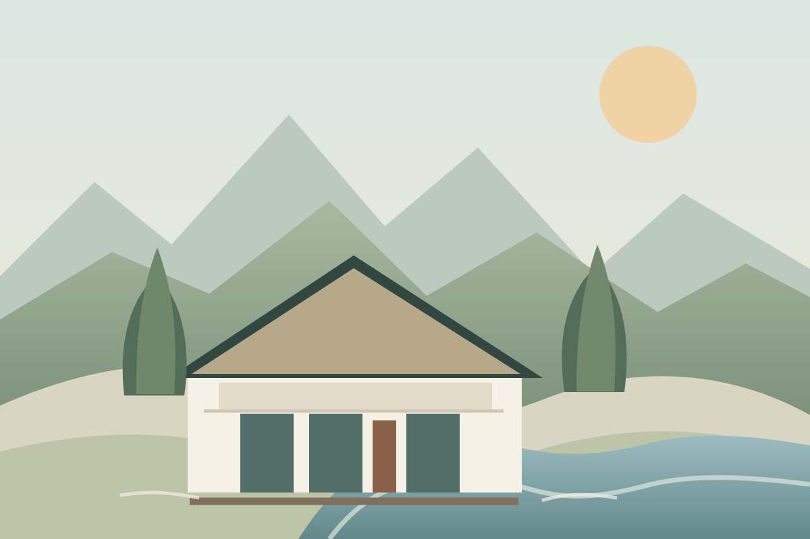

01 MENNING
Gljúfrasteinn
Heimili og vinnustaður Nóbelsverðlaunahöfundarins Halldórs Laxness.
Lesa um staðinnFerð um Suðurland · Ísland
Ferðalag um Gullna hringinn og nágrenni hans tengir saman staði þar sem jarðeldur, fossar og íslensk saga mætast. Hér bíða sex ólíkir staðir, hver með sína stemningu.
.jpg?width=1600)
Gullni hringurinn er ein þekktasta ferðaleið Íslands. Á leiðinni má sjá rótgróinn menningararf, víðáttumikla þjóðgarða, iðandi hverasvæði og fossa sem móta landslagið.
Verkefnið tengir saman sex staði: Gljúfrastein, Þingvelli, Gullfoss, Geysi, Skálholt og Kerið. Gljúfrasteinn er menningarleg hliðarleið áður en haldið er inn á sjálfan Gullna hringinn.
Skoða alla áfangastaðiFrá friðsælum sögustöðum til kraftmikilla náttúruafla — hver áfangastaður opnar nýja hlið á Suðurlandi.

01 MENNING
Heimili og vinnustaður Nóbelsverðlaunahöfundarins Halldórs Laxness.
Lesa um staðinn.jpg?width=1000)
02 ÞJÓÐGARÐUR
Þar sem Alþingi var stofnað og ummerki jarðskorpuhreyfinga blasa við.
Lesa um staðinn


05 SÖGUSTAÐUR
Sögulegt biskupssetur sem hefur mótað íslenskt samfélag um aldir.
Lesa um staðinn
Gullfoss er við Hvítá á Suðurlandi. Notaðu kortið til að skoða staðsetninguna og skipuleggja leiðina.
Opna í Google Maps„Ferðalag um Gullna hringinn er líka ferð í gegnum sögu landsins.“
Kynntu þér staðina — og farðu vel með þá.